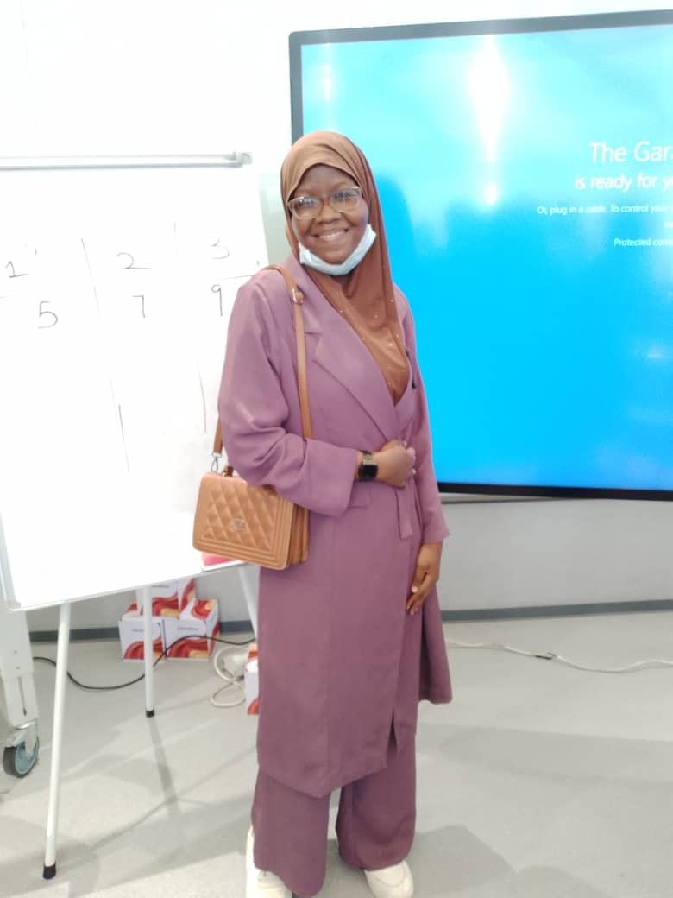

Combining technical engineering knowledge with growing web development skills to build innovative digital solutions.
As an Electrical and Electronics Engineering student at Olabisi Onobanjo University, I'm developing strong problem-solving skills and technical knowledge. Simultaneously, I'm cultivating web development expertise through self-study.
I started learning web development 3 months ago because I wanted to combine my engineering mindset with digital creation. Currently focusing on mastering HTML, CSS, and JavaScript basics.
What excites me most about development is the endless possibility to create and solve real-world problems.
When I'm not studying or coding, you'll find me reading (novels, educational books, or religious books).
I'm eager to collaborate on small projects while I learn. Let's connect!
Every day I'm expanding my skills through watching online videos and practising what I learn. I embrace the beginner's mindset – curious, eager, and constantly improving.